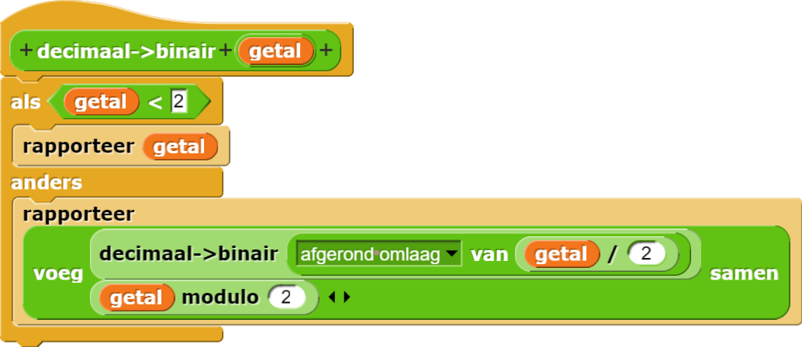

Hier is een oplossing voor het omzetten naar binair van niet-negatieve getallen:

Als een getal met één cijfer kan worden weergegeven, gebruiken we het als basisgeval. Bij binaire getallen zijn er maar 2 getallen die met één cijfer kunnen worden weergegeven, 0 en 1. Dus we testen of een getal kleiner is dan 2. Als dat zo is rapporteren we het getal.
voeg samen omdat we de cijfers samen willen voegen tot een woord.
talstelsel7blok, dat het getal weergeeft in het talstelsel van 7.
talstelselblok dat het talstelsel neemt als tweede
invoer:van talstelsel dat een stuk tekst en een talstelsel als
invoer neemt en daarna het bijbehorende getal rapporteert.
talstelselblok zodat het tot het talstelsel van 36 werkt door de letters
a-z als cijfers met waardes 10-35. van talstelselblok op dezelfde manier.